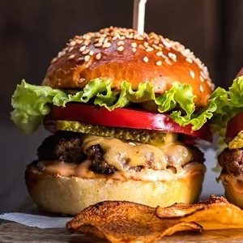
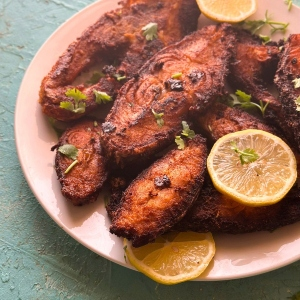
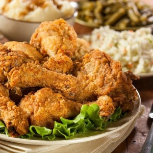

Good Drinks. Good Music. Great Company.
Welcome to Road Trip — Home of the blackberry old fashioned!
SEE THE MENUFeatured This Week
Live music May 16th and happy hour daily from 2–5pm. Try our signature Riverside Old Fashioned.
Who are we?
Road Trip is the kind of neighborhood bar that feels instantly familiar the moment you walk through the door. With vintage travel signs lining the walls, warm lighting, and a playlist that moves from classic rock to modern indie favorites, the space captures the spirit of adventure without losing its laid-back charm. Guests gather around long wooden tables to share stories over signature cocktails, local craft beers, and comfort-food favorites that make every visit feel like a stop on a memorable journey. Whether someone is meeting friends after work or settling in for a late-night conversation, Road Trip offers an atmosphere that feels welcoming, energetic, and effortlessly authentic.
What sets Road Trip apart is its ability to balance nostalgia with a fresh, modern vibe. The bartenders are known for creating creative seasonal drinks inspired by famous highways, cities, and roadside diners across the country, while weekly live music and trivia nights keep the crowd coming back. Large windows and cozy booth seating make the space equally suited for lively weekends or relaxed afternoons, and the friendly staff helps create a sense of community among regulars and newcomers alike. Road Trip isn’t just a place to grab a drink — it’s a destination built around good company, great conversation, and the feeling of discovering something worth revisiting
Gallery


